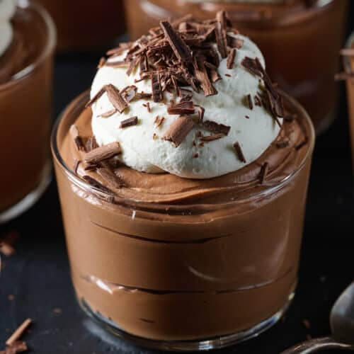

Indulge in a rich and creamy chocolate mousse, perfect for chocolate lovers. This smooth dessert is an elegant treat that's surprisingly easy to prepare.

This chocolate mousse offers a luxurious, silky texture and deep chocolate flavor that is both satisfying and indulgent. Made with quality chocolate and whipped to perfection, this dessert is ideal for special occasions or simply as a delightful treat for yourself. The lightness of the mousse balances its rich taste, making each spoonful a pleasure to savor.
This easy-to-make dessert requires minimal ingredients and can be prepared in advance, making it perfect for entertaining guests. Its airy yet creamy consistency, paired with an intense chocolate flavor, makes it a crowd-pleaser that will impress friends and family.